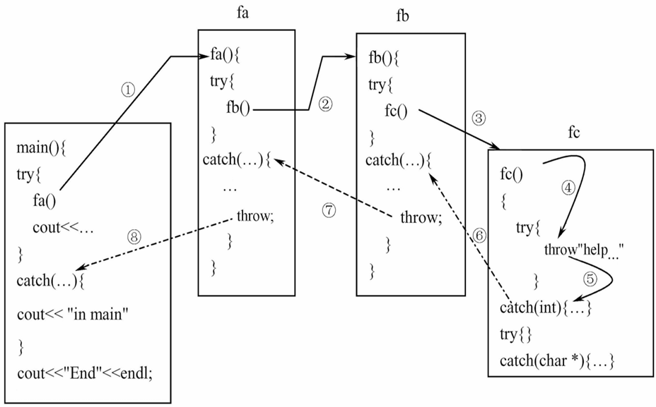
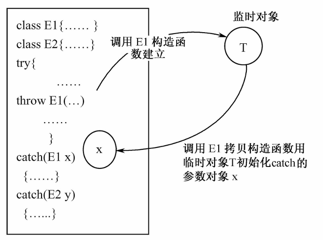

Chapter7 异常
c++处理异常的思想是：将异常发生和异常处理放在不同的函数中。
$~$
7.1 异常处理的结构
$~$
异常处理的程序结构（try-throw-catch）：
| try{
if err1 throw xx1;
if err2 throw xx2;
...
if errN throw xxN;
}
catch(type1 arg){...}
catch(type2 arg){...}
...
catch(typeN arg){...}
|
当程序执行到try模块时，将进入try模块并按照正常顺序执行其中的语句。
如果try模块中所有的语句都正常执行，没有发生异常，那么就不会有异常被throw。这个时候，程序将忽略所有的catch模块。
如果try模块中发生了异常并用throw抛出，则程序控制流程转移到catch模块，try模块中throw后面的语句不再执行。
程序将按照catch模块出现的顺序，用异常的数据类型与每个参数表对照，只要匹配就立刻执行该catch模块，并将异常值传递给它作为参数（如果有的话）。其他catch模块被忽略。（隐含拷贝构造函数）
如果没有任何catch模块与异常匹配，则将调用系统默认的异常处理程序（直接终止）。
如果要进入catch模块，先要将try模块中的所有局部对象析构（栈展开, stack unwinding）；如果try模块没有抛出异常，那么模块正常执行完后再析构局部对象。
Example
| int main()
{
cout<<"1--befroe try block..."<<endl;
try{
cout<<"2--Inside try block..."<<endl;
throw 10;
cout<<"3--After throw ...."<<endl;
}
catch(int i) {
cout<<"4--In catch block1 ... exception..errcode is.."<<i<<endl;
}
catch(char * s) {
cout<<"5--In catch block2 ... exception..errcode is.."<<s<<endl;
}
cout<<"6--After Catch...";
}
|
输出为：
1--befroe try block...
2--Inside try block...
4--In catch block1 ...errcode is..10
6--After Catch...
$~$
异常捕获：
catch模块必须紧跟在与之对应的try模块后面。
catch模块在进行参数匹配时不会进行数据类型的默认转换。
$~$
函数处理异常：
第一种写法：
| void temperature(int t)
{
try
{
if(t==100) throw "沸点！";
else if(t==0) throw "冰点！";
else cout<<"the temperature is OK..."<<endl;
}
catch(int x) {cout<<"temperature="<<x<<endl;}
catch(char* s) {cout<<s<<endl;}
}
int main()
{
temperature(0);
temperature(10);
temperature(100);
}
|
第二种写法：
| void temperature(int t)
{
if(t==100) throw "沸点！";
else if(t==0) throw "冰点！";
else cout<<"the temperature is OK..."<<endl;
}
int main()
{
try
{
temperature(0);
temperature(10);
temperature(100);
}
catch(int x){cout<<"temperature="<<x<<endl;}
catch(char* s){cout<<s<<endl;}
}
|
$~$
7.2 异常处理的几种特殊情况
$~$
noexcept:
如果确定某个函数能正常运行，保证不会产生问题，则可以用noexcept来修饰该函数。
| rtype f(...) noexcept
{
...
}
|
noexcept实际上可以接受一个bool类型的参数：
| rtype f(...) noexcept(e)
{
...
}
|
其中，e是一个逻辑表达式，若结果为true，则表示该函数不会抛出异常；若结果为false，则表示该函数可能会抛出异常。
noexcept同时也是一个可以用来判断函数是否会产生异常的运算符，例如：
$~$
捕获所有异常：
catch模块可以设置成捕获全部异常：
$~$
再次抛出异常：
catch模块如果无法处理捕获的异常，可以将其再次抛出，只需在该catch模块中添加不带任何参数的throw即可：
| try
{
Errhander(...);
...
}
catch(...){...} //L1
void Errhandler(int n)
{
try
{
...
}
catch(...)
{
...
throw; //L2
}
}
|
L2处的throw将其所在catch模块中无法处理的异常交到L1处的catch模块进行处理（如果参数匹配的话）。
$~$
异常的嵌套调用：
一个try模块中可以包括另一个try模块。
Example
| void fc()
{
try{throw "help...";}
catch(int x) {cout<<"in fc..int handler"<<endl;}
try{cout<<"no error handle..."<<endl;}
catch(char* px) {cout<<"in fc...char* handler"<<endl;}
}
void fb()
{
int* q=new int[10];
try
{
fc();
cout<<"return from fc()"<<endl;
}
catch(...)
{
delete[] q;
throw;
}
}
void fa()
{
char* p=-new char[10];
try
{
fb();
cout<<"return from fb()"<<endl;
}
catch(...)
{
delete[] p;
throw;
}
}
int main()
{
try
{
fa();
cout<<"return from fa"<<endl;
}
catch(...){cout<<"in main"<<endl;}
cout<<"End"<<endl;
}
|
输出为：
调用过程如下：

$~$
7.3 异常和类
$~$
构造函数和异常：
由于构造函数没有返回类型，因此无法通过检查构造函数的返回类型来检查异常。以下是几种常见的处理方法：
- 返回一个处于错误状态的对象，外部程序检查该对象状态，决定是否抛出异常；
- 设置一个全局变量标识对象构造是否正确，外部程序检查该变量值，决定是否抛出异常；
- 在构造函数中不进行对象的初始化工作，而是专门设计一个成员函数负责函数的初始化。
Example
B类有一个A类的对象数据obj，B类的构造函数进行了自由存储空间的过量申请，导致资源耗尽，产生异常，异常将调用obj的析构函数，回收占用空间。
| class A
{
int a;
public:
A(int i=0):a(i){}
~A(){cout<<"in A destructor..."<<endl;}
};
class B
{
A obj[3];
double* pb[10];
public:
B(int k)
{
cout<<"int B constructor..."<<endl;
for(int i=0;i<10;i++)
{
pb[i]=new double[20000000];
if(pb[i]==0) throw i;
else cout<<"Allocated 20000000 doubles in pb["<<i<<"]"<<endl;
}
}
};
int main()
{
try{B b(2);}
catch(int e){cout<<"catch an exception when allocated pb["<<e<<"]"<<endl;}
}
|
输出为：
int B constructor...
Allocated 20000000 doubles in pb[0]
Allocated 20000000 doubles in pb[1]
Allocated 20000000 doubles in pb[2]
Allocated 20000000 doubles in pb[3] //这里运行到i等于几是不确定的，取决于计算机配置
in A destructor...
in A destructor...
in A destructor...
catch an exception when allocated pb[4]
$~$
异常类：
Example
设计一个堆栈，当入栈元素超出了堆栈容量时，抛出“栈满”异常；当栈已空但还要从栈中弹出元素时，抛出“栈空”异常。
| const int MAX=3;
class Full{};
class Empty{};
class Stack
{
private:
int s[MAX];
int top;
public:
void push(int a);
int pop();
Stack(){top=-1;}
};
void Stack::push(int a)
{
if(top>=MAX-1) throw Full();
s[++top]=a;
}
int Stack::pop()
{
if(top<0) throw Empty();
return s[top--];
}
int main()
{
Stack s;
try
{
s.push(10);
s.push(20);
s.push(30);
s.push(40);
cout<<"stack(0)="<<s.pop()<<endl;
cout<<"stack(1)="<<s.pop()<<endl;
cout<<"stack(2)="<<s.pop()<<endl;
cout<<"stack(3)="<<s.pop()<<endl;
}
catch(Full){cout<<"Exception:Stack Full"<<endl;}
catch(Empty){cout<<"Exception:Stack Empty"<<endl;}
}
|
输出为：
stack(0)= 30
stack(1)= 20
stack(2)= 10
Exception: Stack Full
由异常类建立的对象称为异常对象，异常类的处理过程实际上就是异常对象的生成与传递过程。
